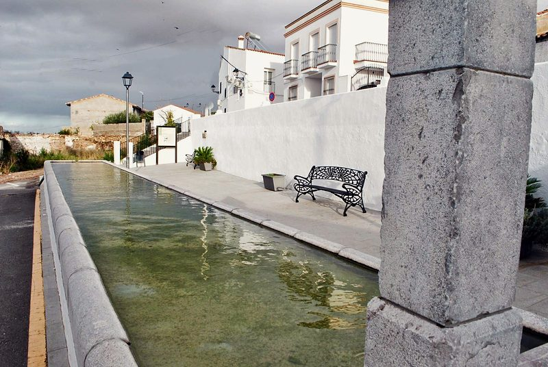
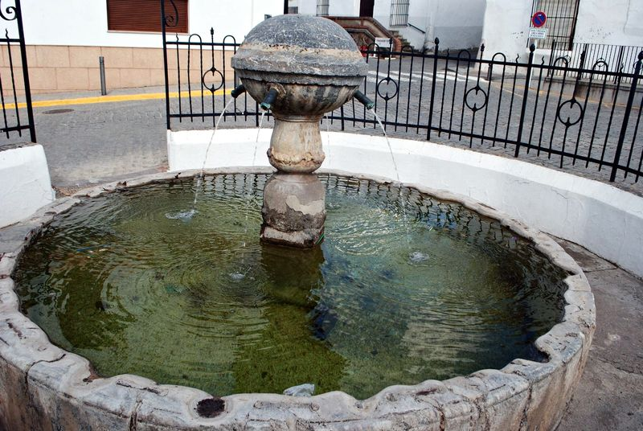
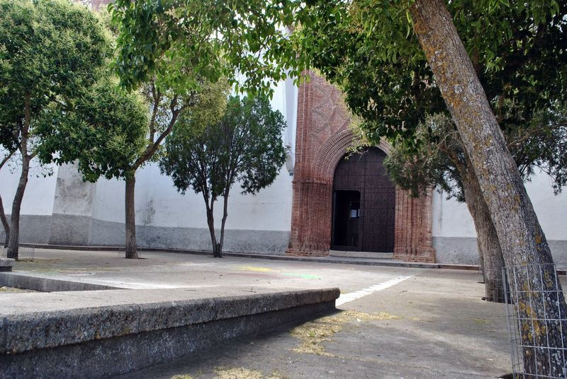
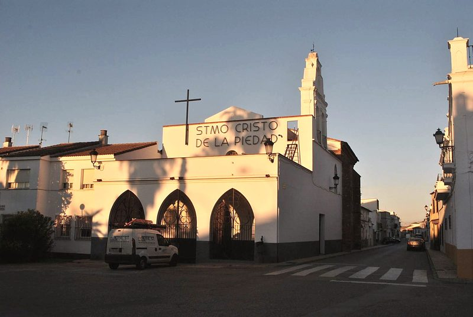
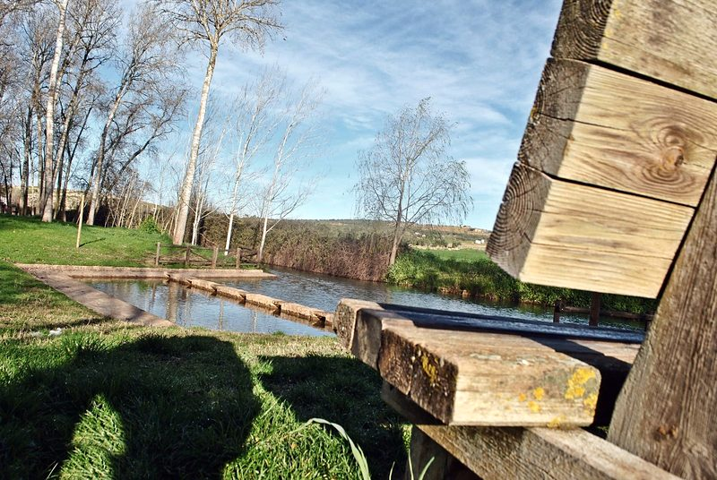
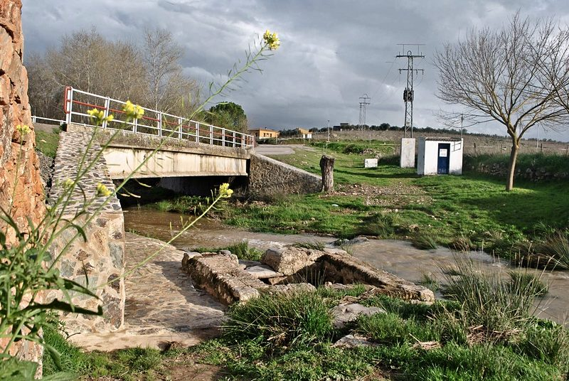
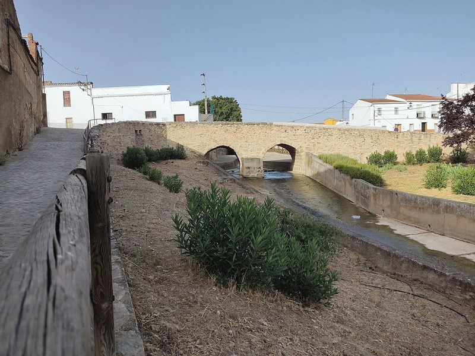

The town
A town in the Campiña Sur, between Zafra and Llerena, split by its rivera (seasonal stream) and joined by a bridge of two arches. It was a commandery of the Order of Santiago and has had its own charter (fuero) since the 13th century.
What to see
-

The Pilar del Carmen (drinking trough)
Next to the bridge, from 1823. Clothes were washed here in the batijeros (washing places) and donkeys drank.
Photo: Town Council tourism website (2025)
-

The fountain in the square
From 1575, rebuilt in 1798: a circular basin sunk below ground level, with its bulb-shaped pillar and its iron railing.
Photo: Town Council tourism website (2025)
-

Our Lady of Grace (Nuestra Señora de Gracia)
A Gothic-Mudéjar church of the 15th century, rebuilt in 1819, with a Mudéjar brick doorway on the Gospel side.
Photo: Town Council tourism website (2025)
-

Chapel of the Cristo de la Piedad
In the former Conceptionist convent. Its chancel, with a star-shaped rib vault, is the oldest part. The procession of 14 September starts from here.
Photo: Town Council tourism website (2025)
-

Presa Honda
The natural swimming pool of the rivera, with a picnic area, a tree-lined walk and a bathing area authorised by the Servicio Extremeño de Salud (Extremadura Health Service).
Photo: Town Council tourism website (2025)
-

La Luná
The spot that supplied the town with water, next to the rivera. The legend of the Cantamora, the siren of the stone, lives here.
Photo: Town Council tourism website (2025)
-

The Roman bridge
Two semicircular arches of granite ashlar, with a central cutwater, rebuilt in the Middle Ages. «Whoever has not seen the bridge has not visited Usagre».
Photo: Gonzalo 11789 · CC BY 4.0
The municipality on a map
Places on the map
- Our Lady of Grace (Nuestra Señora de Gracia)
- Chapel of the Cristo de la Piedad
- Presa Honda
- Chapel of the Virgen de la Cruz
How to read it
- Municipal boundary (dashed line)
- The town (shaded area)
- Roads (thick line): BA-082, BA-131, BA-141, EX-202 y N-432
- Routes (dotted line): Camino de la Frontera
- Numbered circle: a place in the list
- Scale: the bar at the bottom is 5 km
- Inset: the town enlarged; its bar is 500 m
- Thin line with a dot: the exact spot, when the number has been moved aside to keep it readable
Urbs Sacra
VRBS SACRA
Tradition gives Roman Usagre the name Urbs Sacra, «sacred city»: the Diputación (provincial council) calls it «the never-confirmed name». The legend surrounds the coat of arms, with the cross of Santiago over the two-arched bridge and the waves of the rivera.
History
According to the old chroniclers, there was a Turdulian settlement here in the 6th century BC called Ursaria, «because of the many bears there were». Tradition gives the Roman town the name Urbs Sacra, the one on its coat of arms today, although it has never been confirmed. Prehistoric, Roman, Visigothic and Arab remains have been found in the municipality, such as the Visigothic necropolis of El Carballar (6th and 7th centuries).
In 1241 the Santiago master Rodrigo Íñiguez won it for the Christians. His successor, Pelay Pérez Correa, granted it in the mid-13th century the Fuero de Usagre (charter of rights), which is kept in the Archivo Histórico Nacional (National Historical Archive). The town was a commandery of the Order of Santiago, and in 1434 a ruling by Álvaro de Luna set its municipal boundaries.
At the end of the 16th century it lived its best period: it had 625 taxpaying households (vecinos pecheros), about 2,600 inhabitants, three chapels and a convent of Conceptionist nuns that moved to Bienvenida in the 18th century. More than fifty people from Usagre went to America during the conquest.
On 25 May 1811, next to the bridge, the Allied cavalry of Spanish, British and Portuguese troops defeated the French dragoons in the Combat of Usagre. In the 18th and 19th centuries the town was a centre for washing fine wool and for quicksilver mines, and in 1880 the railway arrived, with the Usagre-Bienvenida station.
Heritage
- Roman bridgeRoman, rebuilt in the Middle Ages; its parapets reuse ribs from the parish church's vaults
- Pilar del Carmen1823, with a drinking trough, next to the bridge
- Parish church of Our Lady of GraceGothic-Mudéjar, 15th century, rebuilt in 1819. In the niche on the façade, a stone Virgin and Child, probably Visigothic or Mozarabic
- Chapel of the Santísimo Cristo de la PiedadIn the former Conceptionist convent, founded in the 16th century
- Chapel of the Virgen de la CruzOn the outskirts, where the old cemetery was; it used to be called the chapel of the Madre de Dios
- Fountain in the square1575, rebuilt in 1798
- House of the Commandery of Santiago (Casa de la Encomienda de Santiago)Documented in the 14th century; part of its arches remain, in the square
- House of the Inquisition (Casa de la Inquisición)Calle Convento
- Mudéjar windowCalle Mesones, 10
- Usagre-Bienvenida railway stationMérida-Los Rosales line; the train arrived in 1880
Festivals
January
- Three Kings Parade (Cabalgata de Reyes)5 January
February
- San Blas (Saint Blaise), the «day of the stone»3 February
- Carnival and Domingo de Piñata (Piñata Sunday)Date varies
March
- Holy WeekDate varies; the main brotherhood is that of the Cristo de la Piedad
April
- Circus FestivalIn spring
May
- Cruces de Mayo (May Crosses)In May
- San Isidro pilgrimage (romería)15 May
June
- San Pedro, with the sopará cooking contestEnd of June
July
- Cultural Summer: popular theatre, Día del Moral (Mulberry Day), Medieval FestivalJuly and August
August
- International Folklore FestivalAugust, in the Plaza de España
September
- Festivals of the Santísimo Cristo de la Piedad Main festival13 to 16 September; the procession is on the 14th
October
- San Lucas (Saint Luke), patron saint18 October
- Fiesta del Mayor (Senior Citizens Festival)In October
November
- ChaquetíaAll Saints' Day
December
- Usagreño del año (Usagreño of the Year) and presentation of the town's Escudo (coat of arms)6 December
- Las CandelillasNight of 7 December
Food and drink
Dishes
- Sopará (similar to a gazpacho, crushed)
- Gazpacho pastoril (shepherd's gazpacho)
- Setas en caldereta (mushrooms in a stew)
- Caldereta (stew)
- Migas (fried breadcrumbs)
- Chacina y embutidos (cured and cold meats)
Sweets
- Repostería casera (home-made pastries)
Notable people
Bartolomé de Usagre
16th century
Hernán Cortés's artilleryman in the conquest of Mexico.
Diego de Usagre
16th century
Brother of Bartolomé; one of the 73 founders of San Salvador, in El Salvador.
Walking routes
Mills Route
Circular route from the Plaza del Puente, along the rivera: Molino El Pintado (km 4.6), Moralejo (km 5.2) and Portales (km 5.5).
Market Gardeners' Route
Circular route from the Plaza de España, of 14 or 22 km, through vegetable gardens and waterwheels (norias) along the rivera; it drops from 550 to 447 m. It is organised between March and April.
Camino de Santiago de la Frontera
It crosses the town from south to north, signposted by the Diputación, with panels in easy-read format.
Photo credits
- Chapel of the Cristo de la Piedad: Town Council tourism website (2025). Only for this proposal: the Town Council's permission is needed to publish it
- The Roman bridge: Gonzalo 11789, CC BY 4.0 (photo page)
- The Roman bridge (cover photo): Gonzalo 11789, CC BY 4.0 (photo page)
- The fountain in the square: Town Council tourism website (2025). Only for this proposal: the Town Council's permission is needed to publish it
- The Pilar del Carmen: Town Council tourism website (2025). Only for this proposal: the Town Council's permission is needed to publish it
- Mudéjar doorway of Nuestra Señora de Gracia: Town Council tourism website (2025). Only for this proposal: the Town Council's permission is needed to publish it
- Presa Honda: Town Council tourism website (2025). Only for this proposal: the Town Council's permission is needed to publish it
- La Luná: Town Council tourism website (2025). Only for this proposal: the Town Council's permission is needed to publish it